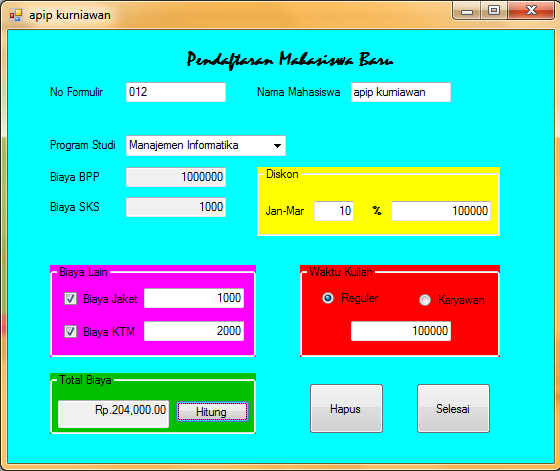

Visual c++
Visual c++ adalah sebuah produk Integrated Development Environment (IDE) untuk bahasa pemrograman C dan C++ yang dikembangkan Microsoft. Visual C++merupakan salah satu bagian dari paket Microsoft Visual Studio. Bahasa ini merupakan bahasa pemrograman tingkat tinggi (kompleks).Langkah awal cara membuka Microsoft visual studio, membuat judul project dan membuat folder untuk menyimpan projectnya.
- Masuk ke aplikasi Microsoft visual studio yang sudah terinstall sebelumnya.
- Lalu pilih menu file pilih new kemudian pilih project.
- Lalu pilih visual c++ - windows forms application - tulis judul project (name) – tentukan folder untuk menyimpan project anda (location) atau bisa juga pilih (browse) untuk mencari folder yang sudah di buat sebelumnya – lalu ok. Seperti gambar di bawah ini !!
- Setelah itu akan muncul tampilan seperti gambar di bawah ini !!
- Ini adalah sebagian elemen-elemen penting yang harus kalian ketahui, yang sebenarnya masih banyak juga elemen – elemen yang lainnya :
- form Lembar kerja.
- Toolbox Macam2 tool untuk membuat project.
- Properties Untuk mengedit tool yang sudah kalian masukan di form.
- Pending checkins Tempat untuk memberi tahu kalau ada error.
- Save all Menyimpan semua project.
- Run Untuk mendebug project yang sudah kalian buat pada form.
- Form1.h (design) Tempat untuk mendesign tampilan projectnya.
- Form1.h Tempat untuk memberi kodingannya.

Membuat project , mengedit tampilan/interface project dan memberi kodingan pada project yang akan kita buat.
Disini saya akan membuat project yaitu “program pendaftaran mahasiswa baru” , berikut hal-hal yang harus di perhatikan.- Membuat project. Contoh tampilan/interface “program pendaftaran mahasiswa baru” dalam keadaan running/ketika di run.
- Tool yang di pakai. Untuk membuat tampilan seperti di atas kita memerlukan tool2 yang mendukung dalam pembuatan program tersebut.
- Label Ini adalah contoh tampilan label :
- Textbox Ini adalah contoh tampilan Textbox :
- Combobox Ini adalah contoh tampilan Combobox :
- Groupbox Ini adalah contoh tampilan Groupbox :
- Checkbox Ini adalah contoh tampilan Checkbox :
- Radiobutton Ini adalah contoh tampilan Radiobutton :
- Button Ini adalah contoh tampilan Button :
- Cara memindahkan tool ke dalam form. Caranya sangat mudah sekali yaitu cukup dengan mengklik toolnya yang Tersedia pada toolbox lalu mengkliknya lagi pada form.
- Cara mengedit interface/tampilan pada form. Untuk mengedit tool yang ada di form tentunya kita harus mengklik pada tool tersebut dan mendesignnya di properties.
- Backcolor = warna background.
- Font = ukuran,jenis dan type font.
- Forecolor = warna font.
- Text = merubah tulisannya.
- Text align = merubah posisi text (center,left,right) dan biasanya untuk bilangan posisi textnya berada di kanan.
- Read only (true) = untuk merubah status text hanya bisa di baca saja (biasanya digunakan pada textbox).
- Items (collection) = untuk memberikan data itemnya (biasanya di gunakan pada combobox).
- Start position = untuk menentukan posisi hasil run programnya.
- Cara memasukan kodingan pada program yang di buat tadi. Cara untuk memasukan kodingan itu sendiri cukup dengan mendouble click/ klik dua kali pada tool yang akan di beri kodingan dan menekan enter sehingga menjadi tampilannya seperti di bawah, dan nantinya tool tersebut akan memberikan fungsi jika program tersebut di run/dalam keadaan running.
- Button 3 (selesai).
- Button 2 (hapus).
- Button 3 (hitung).
- Radio button 1 (regular).
- Radio button 2 (karyawan).
- Checkbox 1(biaya jaket).
- Checkbox 2(biaya KTM).
- Combobox 1 (program studi).
- Textbox 5 (diskon jan-mar).

Berikut adalah tool yang di ambil dari toolbox yang akan di pakai dalam membuat program di atas :

Berikut adalah fungsi beberapa perintah pada properties :
ket :Berikut adalah tool2 yang di beri kodingan pada program di atas.
Ket : copy bagian yang diwarnai saja jika ingin mencopy paste
private: System::Void button3_Click(System::Object^ sender, System::EventArgs^ e) {
this->Close ();
}
private: System::Void button2_Click(System::Object^ sender, System::EventArgs^ e) {
comboBox1->Text ="";
checkBox1->Checked=false;
checkBox2->Checked=false;
radioButton1->Checked=false;
radioButton2->Checked=false;
textBox1->Text ="";
textBox2->Text ="";
textBox3->Text ="";
textBox4->Text ="";
textBox5->Text ="";
textBox6->Text ="";
textBox7->Text ="";
textBox8->Text ="";
textBox9->Text ="";
textBox10->Text ="";
}
private: System::Void button1_Click(System::Object^ sender, System::EventArgs^ e) {
double num1,num2,num3,num4,num5,num6;
double::TryParse(textBox4->Text,num1);
double::TryParse(textBox6->Text,num2);
double::TryParse(textBox7->Text,num3);
double::TryParse(textBox8->Text,num4);
double::TryParse(textBox9->Text,num5);
num6 = num1 + num2 +num3+num4+num5;
textBox10->Text ="Rp." + num6.ToString ("N") ;
}
private: System::Void radioButton1_CheckedChanged(System::Object^ sender, System::EventArgs^ e) {
textBox9->Text ="100000";
}
private: System::Void radioButton2_CheckedChanged(System::Object^ sender, System::EventArgs^ e) {
textBox9->Text ="300000";
}
private: System::Void checkBox1_CheckedChanged(System::Object^ sender, System::EventArgs^ e) {
if (checkBox1->Checked )
textBox7->Text ="1000";
else
textBox7->Text ="0";
}
private: System::Void checkBox2_CheckedChanged(System::Object^ sender, System::EventArgs^ e) {
if (checkBox1->Checked )
textBox8->Text ="2000";
else
textBox8->Text ="0";
}
private: System::Void comboBox1_SelectedIndexChanged(System::Object^ sender, System::EventArgs^ e) {
if (comboBox1->SelectedIndex == 0){
textBox3->Text ="1000000";
textBox4->Text ="1000";}
else if (comboBox1->SelectedIndex == 1){
textBox3->Text ="900000";
textBox4->Text ="2000";}
}
private: System::Void textBox5_TextChanged(System::Object^ sender, System::EventArgs^ e) {
double num8,num2,num4;
double::TryParse(textBox3->Text,num8);
double::TryParse(textBox5->Text,num2);
num4 = num8 * num2/100;
textBox6->Text = num4.ToString () ;
}
Mengedit warna label , warna form dan warna groupbox dalam keadaan run.
Contoh interfacenya :Berikut kodingannya :
Ket :
Untuk form = this
Untuk groupbox = groupbox
Untuk label = label
- Radiobutton (hijau)
private: System::Void radioButton3_CheckedChanged(System::Object^ sender, System::EventArgs^ e) {
this->BackColor = Color :: Green;
groupBox1->BackColor = Color :: Blue;
label1->ForeColor = Color :: Red;
}
private: System::Void radioButton1_CheckedChanged(System::Object^ sender, System::EventArgs^ e) {
this->BackColor = Color :: Red;
groupBox1->BackColor = Color :: Green;
label1->ForeColor = Color :: Cyan;
}
private: System::Void radioButton2_CheckedChanged(System::Object^ sender, System::EventArgs^ e) {
this->BackColor = Color :: Blue;
groupBox1->BackColor = Color :: Red;
label1->ForeColor = Color :: Yellow;
}
private: System::Void radioButton6_CheckedChanged(System::Object^ sender, System::EventArgs^ e) {
this->BackColor = Color :: Empty;
groupBox1->BackColor = Color :: Empty;
label1->ForeColor = Color :: Empty;
}
Membuat program input data tidak secara manual.
Ket :untuk 1 = muncul pada kolom nim
untuk 2 = muncul pada kolom nama
untuk 3 = muncul pada kolom alamat
untuk 4 = muncul pada kolom kota
untuk 5 = muncul pada kolom telepon
untuk 6 = muncul pada kolom email
interface yang di inginkan :